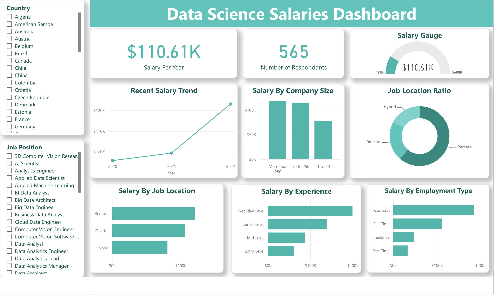

Data science salaries: Excel analysis and Power BI dashboard
The Power BI dashboard file is in my GitHub repository. A screenshot of it appears on this page when the image file is added to the site.
The question
How do data science salaries differ by experience, company size, year, and country?
- 607 salary records
- XLOOKUP and IF formulas
- Pivot tables
- Power BI dashboard
What I did
- Prepared the data in Excel: converted the dataset to a table and used
XLOOKUPagainst a country-code list to add full country names for employee residence and company location. - Added a company-size label with a nested
IFformula that turns Small, Medium, and Large into employee-count ranges. - Built seven pivot tables of average salary in USD by experience level, job title, country, employment type, year, and company size by experience level.
- Rebuilt the analysis as a Power BI dashboard with salary charts by job location, experience, employment type, company size, and year, a salary gauge, and slicers for job title and company location.
Results
- The average salary across all records was about $110,600.
- Pay rose steeply with experience: $61,643 for entry level, $87,793 for mid-level, $138,375 for senior level, and $199,392 for executive level.
- Average salary also rose over time: $95,813 in 2020, $99,430 in 2021, and $123,089 in 2022.
- Among countries with salary data, the United States averaged $144,293.
- At the executive level, companies with more than 250 employees paid about $221,900 on average, compared with about $201,300 at companies with 1 to 50 employees.

Tools
- Excel (XLOOKUP, pivot tables)
- Power BI
Skills shown
- Excel formulas
- Pivot tables
- Data preparation
- Dashboard design in Power BI
- Slicers and interactive filtering
- Summarizing results for business readers
Code preview
Adding full country names and company-size labels in Excel
=XLOOKUP(ds_salaries[[#This Row],[employee_residence]], data_csv!$B$3:$B$251, data_csv!$A$3:$A$251,, 0)
=IF(N2="Large", "More than 250", IF(N2="Medium", "50 to 250", IF(N2="Small", "1 to 50")))Excerpts from the original file, reformatted for readability. View the Excel workbook on GitHub.
I also built a Tableau dashboard for this project. See it on the Dashboards page.